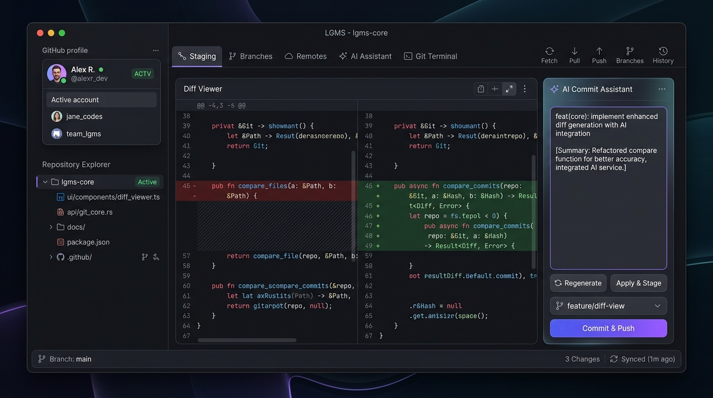

Accelerate multi-account Git operations with zero token exposure. Seamlessly switch between work and personal GitHub organizations, generate standardized Conventional Commits with AI, and work natively in high-performance WPF Desktop and ASP.NET Core environments.

Eliminate authentication friction when switching between client organizations and personal repositories without compromising your commit history or security keys.
Toggle between personal, client, and corporate GitHub accounts in one click. Never store raw OAuth tokens; all credentials delegate securely to the Windows Credential Manager and GitHub CLI.
Feed staged modifications into DeepSeek Reasoner or Google Gemini. The engine generates structured Conventional Commit subjects and explanatory bullet points adhering to team standards.
Inspect working tree changes with unified and side-by-side view modes. Supports line-level addition and deletion highlighting, hunk navigation, and selective modification discard.
Discover accessible repositories under any authenticated GitHub profile. Filter repositories by owner or name and clone directly into your workspace with transport credentials auto-assigned.
Point LGMS to your root development directory. An asynchronous scanner identifies all nested Git repositories in milliseconds, reporting branch status, ahead/behind counters, and uncommitted modifications.
Access an embedded command terminal restricted to safe Git operations. Execute custom branch merges, inspect reflogs, review remotes, and record operation logs in the audit database.
Follow the operational workflow from initial prerequisites and multi-account linking to AI-powered commits and 1-click cloud repository cloning.
The standalone Windows distribution includes its own self-contained .NET 9 runtime. Ensure Git and GitHub CLI are available on your system path:
PATH.
gh) for account discovery and credential helper binding.
# Verify Git installation git --version # Output: git version 2.47.0.windows.1 # Verify GitHub CLI gh --version # Output: gh version 2.60.0 (x86_64-w64-mingw32)
Authenticate each required GitHub account using standard OAuth browser handshakes. LGMS never inspects or logs raw access tokens:
gh auth login --hostname github.com --web for each personal or organizational profile.
gh auth setup-git to register GitHub CLI as Git's credential provider.
# 1. Login to Primary / Personal Account gh auth login --hostname github.com --web # 2. Login to Enterprise / Work Account gh auth login --hostname github.com --web # 3. Bind Windows Credential Helper gh auth setup-git
Designate a parent directory containing your code repositories. LGMS scans subfolders recursively in parallel:
.git repository roots.
// Scanning root directory: "E:\Asp.NET Work\Test Project" [OK] LGMS -> branch: main (3 ahead) [Modified] [OK] CoreUtils -> branch: v2-dev (Clean) [OK] MicroServiceApi -> branch: feature/jwt (1 behind) Scan complete: 3 repositories discovered in 12ms.
Manage staged modifications with granular line-level control prior to committing:
diff --git a/GitService.cs b/GitService.cs @@ -14,6 +14,8 @@ public class GitService - public void RunPush() + public async Task<bool> RunPushAsync(string repoPath) + { + return await _processRunner.RunAsync("git", "push"); + }
Eliminate generic commit titles. LGMS analyzes staged git diffs using DeepSeek or Google Gemini:
feat, fix, refactor, etc.).
# Generated Subject: feat(auth): integrate GitAccountOperationLock mutex # Generated Description: - Enforce serialized thread-safe execution of gh auth switch - Prevent concurrency collisions on shared Windows Credential token - Retain author signature on every commit
Clone public or private repositories from any linked account without navigating web portals or managing SSH keys manually:
// 1. LGMS sets active account gh auth switch --user sayedarshad2003 // 2. Clones repository directly via HTTPS git clone https://github.com/sayedarshad2003/LGSM.git Cloned successfully into: E:\Asp.NET Work\Test Project\LGMS
Execute direct Git CLI commands directly within an integrated, safe execution environment:
lgms:~$ git branch -a * main remotes/origin/main remotes/origin/feature/ai-commit-assistant lgms:~$ git remote -v origin https://github.com/sayedarshad2003/LGSM.git (fetch) origin https://github.com/sayedarshad2003/LGSM.git (push)
Test multi-account toggling, AI commit generation, syntax diff viewing, and the sandboxed Git terminal in this live simulator.
+ builder.Services.AddSingleton<GitAccountOperationLock>();
+ using (await _accountLock.AcquireAsync())
+ {
+ await _cli.SwitchAccountAsync(account.Username);
+ await _git.PushAsync(repoPath);
+ }
On branch main Your branch is up to date with 'origin/main'. Changes to be committed: (use "git restore --staged <file>..." to unstage) modified: LGMS.Core/Services/GitAccountOperationLock.cs modified: LGMS.Desktop/Views/MainWindow.xaml status: clean working tree ready to commit
Ready for immediate deployment. Download the self-contained standalone desktop package or clone the open-source repository.
Native Windows WPF single-file executable. Self-contained .NET 9 engine included with no external runtime setup required.
LGMS.Desktop.exe immediately without administrative installation
1. Download and extract LGMS-Desktop-Windows-x64.zip
2. Launch LGMS.Desktop.exe
3. Connect your GitHub accounts or point to your repository workspace to begin.
Access the complete source code, review architectural patterns, or contribute enhancements to the project.
git clone https://github.com/sayedarshad2003/LGSM.git
If you have the .NET 9 SDK installed, you can build your standalone binary directly:
dotnet publish LGMS.Desktop/LGMS.Desktop.csproj -c Release -r win-x64 --self-contained true -p:PublishSingleFile=true -o ./publish/desktop-standalone
How LGMS isolates credentials, guarantees thread-safe account switching, and preserves commit authors.
Traditional Git GUIs often save personal access tokens in plain text files or unencrypted SQLite databases. LGMS delegates all token storage to the secure Windows Credential Manager.
The custom GitAccountOperationLock guarantees that account toggling and remote Git operations execute sequentially, preventing transport session collisions.
Switching your GitHub login for push/pull transport will never alter your local repository's user.name and user.email author configuration.
| Evaluation Parameter | LGMS (.NET 9) | Generic Git GUIs | Standard Git CLI |
|---|---|---|---|
| GitHub Multi-Account Switching | 1-Click with atomic mutex lock | Manual re-login / token overwrite | Complex manual SSH/config edits |
| Credential Security | Delegated to Windows Credential Manager | Tokens stored in application config | Git Credential Manager |
| AI Conventional Commit Assistant | Integrated (DeepSeek & Gemini) | None or expensive paid add-on | None |
| Dual WPF Desktop & Web MVC App | Both native desktop and ASP.NET Core | Single standalone app only | CLI only |
| Workspace Multi-Repo Discovery | Fast recursive millisecond scan | Slow manual project imports | Manual directory navigation |
| Licensing & Distribution | Free, Open Source (MIT) & Standalone | Freemium / Monthly Subscription | Free & Open Source |
Answers to technical questions regarding installation, security, and operation.
No. LGMS uses the official GitHub CLI (gh) and Windows Credential Manager. Authentication tokens remain safely stored within the Windows secure credential subsystem. LGMS only reads public identity metadata (usernames and avatar URLs) for display.
No. The published standalone package (LGMS-Desktop-Windows-x64.zip) is compiled as a self-contained single-file executable. It bundles the required .NET 9 runtime inside LGMS.Desktop.exe, permitting execution without separate .NET installations on Windows 10 or 11.
Run gh auth login --hostname github.com --web in PowerShell or Command Prompt and complete the browser verification for your additional account. Upon completion, refreshing LGMS immediately lists the newly authenticated account for 1-click switching.
No. LGMS maintains strict separation between transport authentication (who connects to GitHub) and author configuration (the user.name and user.email embedded into commits). Toggling accounts for push or pull will not alter existing or future commit signatures.
In the Desktop application, navigate to the Settings tab and input your DeepSeek or Google Gemini API key. Settings are persisted locally on your machine at %LOCALAPPDATA%\LGMS\settings.json and never transmitted externally.
The project is open source and hosted on GitHub at https://github.com/sayedarshad2003/LGSM. Pull requests, bug reports, and discussions are welcome.